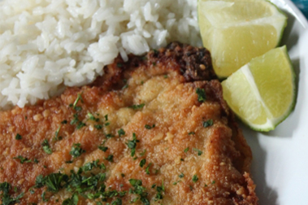
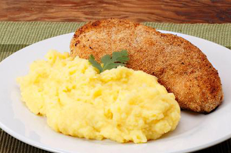
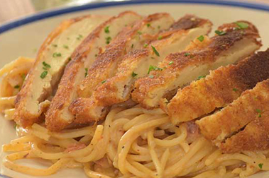

Ingredientes
- Pechugas de pollo (A elegir)
- Huevos
- Maizena
- Pan molido / Panko / Empanizador
- Pimienta en polvo
- Sal
- Ajo en polvo
- Paprika
- Aceite a preferencia
Preparacion
- Tomar la o las pechugas de pollo y colocar por ambos lados y presionando ligeramente la sal, pimienta y ajo
- Dependiendo del tamaño o cantidad de pechuga de pollo se baten de 1 a 2 huevos en un plato con poca sal y pimienta
- Colocar la maizena en un plato y combinar con paprika
- Ya sea panko o empanizador en bolsa, ponerlo en un plato y colocar las especias que se le pusieron al pollo
- Con los huevos revueltos, la maizena y empanizado preparados, combinamos de la siguiente manera:
a: El pollo en la maizena preparada
b: El pollo con maizena en el huevo
c: El pollo con maizena bañada en huevo en el empanizador
Cubrir completamente con todo y retirando excesos
- Calentar el sarten y poner aceite, una vez este caliente el aceite se pone en flama media y se coloca el pollo
- Se estara volteando la pechuga cada cierto tiempo
- Una vez ambos lados de la pechuga esten fritos o al gusto se retira y se pone en un plato
¿Con que acompañar el pollo empanizado?
Papas

Arroz al gusto
Ramen

Pure de Papa

Spaguetti